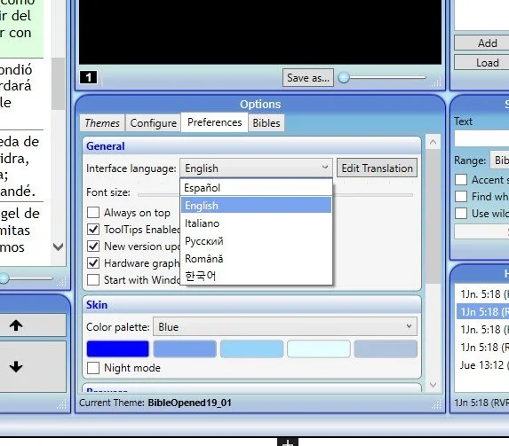
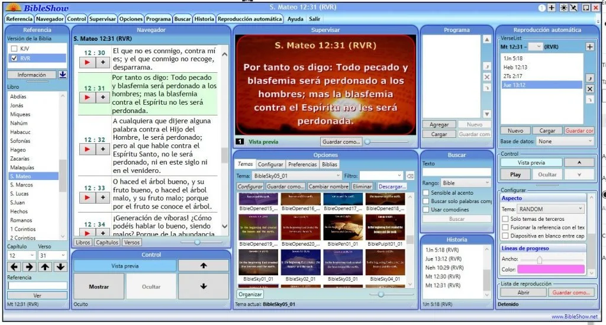

Programas | Software para Proyectar la Biblia

BibleShow es una solución de software para presentar versículos de las Sagradas Escrituras en cualquier dispositivo de visualización de video (monitor, proyector, televisor, IWB) conectado a una computadora personal que ejecute el sistema operativo Microsoft Windows.
La aplicación es para ser compartida de forma gratuita con cualquier usuario, siendo desarrollada con el objetivo de difundir la Palabra de Dios (Biblia) en todo el mundo. Los usuarios que se beneficiarán principalmente de esta herramienta son iglesias, organizaciones cristianas, predicadores, líderes de grupos de estudio bíblico, pero también los espectadores que pueden disfrutar de la lectura de versículos bíblicos que se muestran rápidamente con un diseño moderno y atractivo.
Hemos estado buscando un software para proyectar versículos de la biblia en una pantalla/proyector y creemos que este es el mejor porque es gratis! Sabemos que existen otros softwares avanzados con muchas opciones, pero son de pago y muchas congregaciones pequeñas no pueden hacer tal inversión.
Lo que mas nos gusta de este software, además de ser gratuito, es que es muy fácil de utilizar, si función principal es proyectar versículos de la biblia y nada mas. Sin embargo, cuenta con muchas funciones interesantes (como las búsqueda por palabras) que pueden resultar útiles a la hora de proyectar la biblia en la iglesia.
Funciones y Opciones
Obtenga una vista previa y muestre los versículos de la Biblia proporcionando una referencia completa o parcial (versión, libro, capítulo y versículo); (puedes ver como queda antes de proyectarlo).
Presentar múltiples versiones (hasta 7) al mismo tiempo, accediendo a un número creciente de traducciones de la Biblia.
Cree y administre fácilmente una lista de programas con referencias de versos que se mostrarán.
Busque en la Biblia versículos que contengan una palabra o frase específica.
Supervise en vivo, obtenga una vista previa y transmita el contenido de video que se muestra en la pantalla.
Reproducción automática de listas de versos predefinidas o incluso un capítulo completo.
Listo para usar cientos de temas predefinidos, con capacidad para agregar nuevos temas personalizados; (una de sus mejores funciones, muchos temas muy llamativos para presentar los versículos).
Instalación / actualización rápida de módulos bíblicos disponibles en numerosos idiomas.
Historial de todas las referencias bíblicas mostradas en la sesión de trabajo actual; (muy interesante para no tener que volver a buscar misma referencia varias veces).
Opciones más que suficientes para configurar y mejorar la presentación de las Escrituras: tamaño y posición de la pantalla, contenido de fondo y borde, diseño y formato de versículo / referencia, efecto y duración de las transiciones, etc.
Innumerables posibilidades para configurar la interfaz de usuario: posición y tamaño de los paneles, idioma del menú, paleta de colores de piel, modo nocturno, notificación de actualización, formato de texto, información sobre herramientas útiles, etc.
Muy importante para aprovechar la funcionalidad del software
Una vez conecte la segunda pantalla/proyector (con cable HDMI o VGA). Utilice la opción de pantalla ampliada o extendida, mediante las teclas Windows + P, que le permite extender la pantalla de su PC y así obtener dos pantallas. Una (la de su PC) donde puede monitorear y controlar el software. La otra (la del proyector/televisor) donde va a proyectar y mostrar los versículos.
Ahora cuando oprima «Mostrar» en el software de la biblia, solamente tendrá que arrastrar hacia la pantalla extendida (a la derecha) la imagen del versículo generada. En adelante solo tendrá que cambiar y manejar el software desde su pantalla (PC) y la pantalla extendida cambiará automáticamente.
Instalación
Originalmente el software BibleShow viene en idioma ingles y con una versión de la biblia en ingles. Pero hemos traducido la interfaz a Español y puedes agregar varias versiones de la biblia también en Español muy fácilmente.
PASO 1: Lo primero es descargar e instalar el software BibleShow desde la página oficial(Enlaces en la seccion descargas): — una vez instalado, cierra el programa para continuar con los siguientes pasos.
PASO 2: Descarga el archivo de traducción al Español: Descargar — Este archivo lo vas a copiar y pegar en la ubicación C:\BibleShow5, y le das en reemplazar.
PASO 3: Tienes que instalar las Biblia en español. Nosotros solo instalamos la Reina Valera 1960, que puedes Descargar aquí . — solo tienes que ejecutar el archivo y la biblia se instala automáticamente (si quieres mas versiones en español, descárgalas en BIBLE MODULES).
Utilizando el software
Ahora puedes abrir el software BibleShow y lo primero que debes hacer es escoger el idioma Español que ya habíamos instalado. Vas a Preferences y eliges Español.

En seguida vas a la sección de versiones de la biblia y eliges la RVR (Reina Valera 1960) — puedes cambiar entre versiones incluso estando proyectando.

Listo, el software ya esta preparado para utilizar. Ahora solo debes buscar el versículo deseado y darle en el botón Play al lado del versículo o darle clic en el botón Mostrar en la parte inferior.
Puedes congelar la imagen mientras buscas otra referencia, puedes ocultarla y poner la pantalla en negro, también obtener una vista previa y puedes cambiar el tema/estilo para presentar los versículos. En fin, el software tiene muchas opciones interesantes para explorar.

| Descargas
Bible Show | Programa